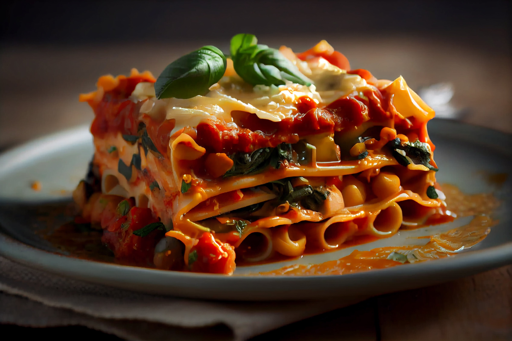

Italianno Lasagna


Description
Ingredients
The following are the Ingredients of an Italianno Lasagna
- 9 lasagna noodles
- 1-1/4 pounds bulk Italian sausage
- 3/4 pound ground beef
- 1 medium onion, diced
- 3 garlic cloves, minced
- 2 cans (one 28 ounces, one 15 ounces) crushed tomatoes
- 2 cans (6 ounces each) tomato paste
- 2/3 cup water
Steps for making the dish
- Prepare meat sauce
- Roughly dice the onion, and mince as much garlic as you want.
- Once you've got the veggies prepped, film your sauce pan with olive oil.
- Heat the pan over medium and cook the ground beef and Italian sausage until browned.
- Once you've drained the extra fat, throw in the onions and garlic.
- Stir this around for a few minutes over medium heat until the onions become soft.
- Then add in a few good pinches of Italian seasoning, a pinch of basil,
oregano and salt, and a tablespoon or two of tomato paste.
- Cook (or Don't Cook) Your Noodles
- You'll need to fill a stock pot with water and cook those.
- Once they're done, rinse them with cold water using a colander and set them aside.
- Try to separate them a bit so they stick less later.
- Prep the Cheese and Finish the Sauce
- Grab out a couple handfuls of parmesan and mozzarella and put them in a small bowl.
- Place the ricotta into a large bowl, along with one egg.
- Mix this all together with your hands.
- Once you're all done with the cheese, double check the sauce and adjust the flavors as necessary.
- You may need to add salt, sugar or more herbs .
- Assembling
- Preheat the oven to 375 degrees F / 200 degrees C.
- Make sure your cheeses, noodles and sauce are all within easy reach.
- Now you'll put more sauce over the cheese and then noodles, more cheese, and then sauce again.
- Now bake at 375 F for 40 minute make sure it's not too dark!
- Finished Product
- Once it's done baking, pull it out and let it sit for a few minutes before cutting into it
- Serve it to a bunch of hungry friends and/or family with warm garlic bread and enjoy your meal!